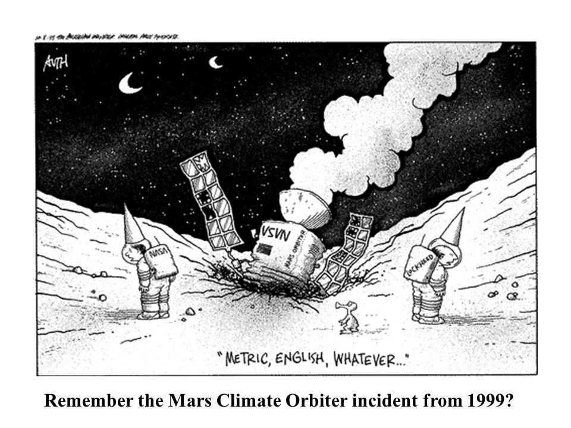
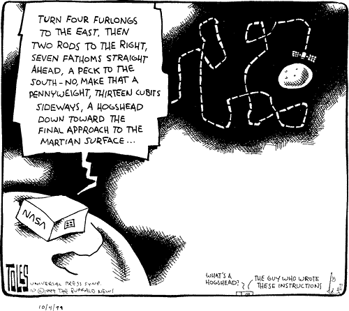

D1.4 Units and Conversion#
D1.4.1 Why Units Are Important#
Units are means of communicating quantities of measurements (or numbers) or otherwise related physical quantities. For example, consider the following statements:
The car drove 50.
The car drove 50 mph.
The car drove 50 km.
Obviously, the first statement provides us with a quantity, but we are left clueless in regards to what physical parameters we are speaking off: the sentence is grammatical correct but makes absolutely no sense in terms of physics. The last two statements, on the other hand, clearly defines the measurement and the unit: we can make sense of the statements.
Well-defined units allow us to relate measured quantities/amounts.
D1.4.2 Standard Metric Units#
An almost unlimited number of units exists, and we can even make up our own units. In the US it is custom to use the British Imperical Units. The majority of the rest of the world is using a standard-based set of units known as the International System of Units or SI units for short (abbreviated from the French word). This metric system consists of 7 units from which all our physical units can be expressed or derived.

For the interested student, more details can be found here and here
In mechanics, we use three fundamental units: kilogram (kg), meter (m), and second (s).
Other units can be derived from these. For example: Unit of Force:: Newton (N) = kgm/s\(^2\) and Unit of Energy :: Joules (J) = kgm\(^2\)/s\(^2\)
Metric vs. Standard Metric Units#
We often see units such as millimeter (mm), centimeter (cm), and kilometer (km) as units of length measurements. These are all metric units but not standard metric unit. The standard metric unit for length is the meter (m). Similarly, units of mass can be in grams (g) which is a metric unit, but the standard metric unit is the kilogram (kg).
D1.4.3 Unit Conversion#
Often times we are given quantities in units that are not standard or in Imperial units, and we may need to be convert them into standard metric units for analysis or improved understanding.
The cognitive understanding of units and unit conversion is imperative to science. A great example of a professional team of scientists not being cognitive of units and unit conversions is the Mars Climate Orbiter, which burned up in the atmosphere of Mars and lead to several funny science jokes:
 Courtesy US Metric Association
NASA lost the Mars Climate Orbiter (worth $125 million) because one engineering team used metric units while another used English units for a key space craft operation. The unit used was in lbs of force instead of the anticipated Newton.
There are many approaches to convert units from one system to another. You should use the approach that you are comfortable with. I am a huge fan of Algebra, and in particularly Linear and Abstract Algebra. The foundations of algebra are axioms that defince certain elements and operations that are allowed in a mathematical realm such as number space, vector space, Hilber Space, Banach space, Minkowski Space, etc. I could go on a long, very long, spiel on the importance of teaching Linear Algebra, and how an understanding of Linear Algebra greatly enhances our understanding of the physics we learn. In fact, basic arithmetic learned in elementary school is Linear Algebra, but unfortunately turned into some sort of memorization approach instead of understanding of the subject matter. The “common core math standard” is an attempt to get back to the fundamental understanding of algebra.
My approach to unit conversion that I cover below, is taken straight out of principles in Linear Algebra.
Number 1#
In Linear Algebra, numbers belong to a certain set, group, or algebra. In a certain algebra, there are axioms, which are rules that must be followed for every action within that algebra. For example, there is an axiom that says that if \(2 + 3 = 5\) then \(3 + 2 = 5\) must also be true, which is known as the commutative rule. It may seem simple, but that is only because we have been taught that is true. There are other algebras where that is not true! Another example is the distributive rule \((A + B)C = AC + BC\).
The axiom (or rule) we are going to use here is the rule that:
In our algebra exists a number \(1\) such that any other number (or element) \(x\) multiplied by one is unaffected by this multiplication. Written out in equation form:
How to Write “1”#
There are many ways we can write the number “1”. Here are three examples: $\(1\)$
We will use the relationships between units to write “1”. For example, 3.281 ft is equivalent to 1 m. That means that we can write
or
We have now written the number “1” in terms of numbers and units.
Example 1
Methodology We need to find a number “1” such that it can be written as a ration containing ft in the numerator and m on the denominator. From conversion tables, we have that \( 1~\textrm{m} = 3.281~\textrm{ft} \). Hence, our chosen number one is
Solution We take our number of interest and multiply by our chosen one:
We can deal with the numericals and units separately. The units will divide “m” out and leave “ft”, while the numericals gives 8.5306:
Hence, 2.6 m is the same as 8.5 ft. Notice that we left the answer with 2 significant figures.
Converting Multiple Units#
If we have more than one unit to convert, we simply multiply by “1” for each unit conversion
D1.4.4 Test Yourself#
Show code cell source
from jupyterquiz import display_quiz
import json
with open("quiz-unit-conversions.json", "r") as file:
questions=json.load(file)
display_quiz(questions)